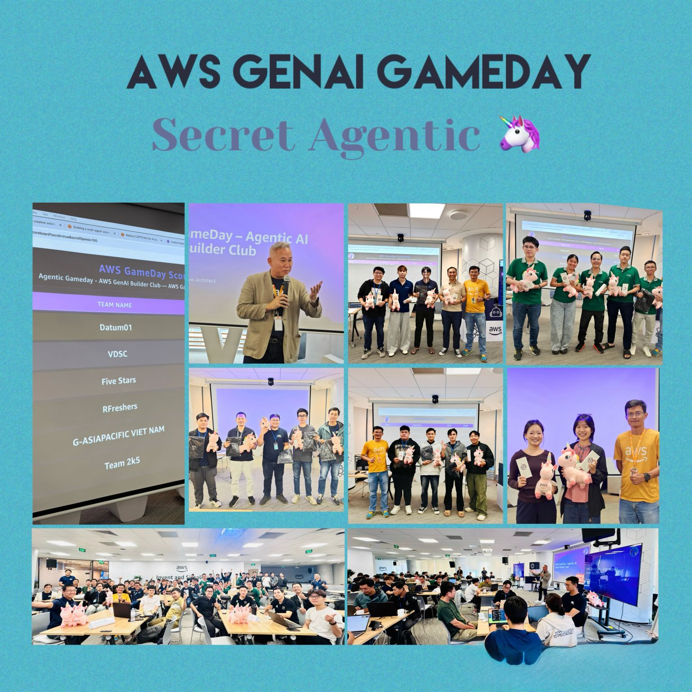

Secret Agent(ic) AI GameDay được thiết kế cho nhiều vai trò khác nhau—bao gồm data scientist, ML practitioner, architect, developer và operations engineer.
Người tham dự:
Nên quen với AWS Console
Có lợi khi làm việc nhóm đa kỹ năng
Không bắt buộc biết lập trình (biết thì càng tốt)
Được khuyến khích lập nhóm gồm Beginner, Intermediate, Expert để tối ưu hợp tác
Độ Khó
Mỗi nhóm lý tưởng gồm 3–5 thành viên với kỹ năng đa dạng:
1–2 Experts
1–2 Intermediate
1–2 Beginners
Điều này giúp cân bằng kỹ năng và tạo cơ hội học hỏi chéo.
Điểm nổi bật
Hành trình GenAI phiêu lưu
Sự kiện biến việc học GenAI thành một nhiệm vụ tương tác, nơi các nhóm hoạt động như Đặc vụ Bí mật, giải quyết thử thách bằng AI agents, database, knowledge retrieval và công cụ observability.
Thay vì học lý thuyết, người chơi tiến qua:
Nhiệm vụ
Câu đố tính giờ
Phân tích chứng cứ
Các thử thách tích điểm
Format này giúp tăng cường học kỹ thuật và kỹ năng làm việc nhóm.
Trải nghiệm thực hành với Bedrock & AgentCore
Người chơi tương tác với các dịch vụ GenAI hiện đại:
Sử dụng Foundation Models để suy luận ngôn ngữ tự nhiên
Truy xuất dữ liệu qua Knowledge Bases
Đảm bảo an toàn và tính đúng đắn bằng Guardrails
Chạy multi-step agents bằng AgentCore Runtime & Memory
Quan sát hành vi agent, debug và trace
Lưu dữ liệu nhiệm vụ trong DynamoDB
Dùng OpenSearch Serverless cho truy xuất nâng cao
Những khái niệm này mô phỏng workload AI thực tế nhưng được trình bày theo cách gamified, dễ tiếp thu.
Hợp tác & Chiến lược Đội nhóm
Để thành công, nhóm cần:
Giao tiếp rõ ràng
Chia vai trò hợp lý
Ghi chú và theo dõi thông tin chung
Xử lý sự cố nhanh
Linh hoạt thích ứng
Điểm không chỉ dựa trên hoàn thành nhiệm vụ, mà còn dựa trên hiệu suất, sự sáng tạo, và độ chính xác kỹ thuật.
Agenda
Intro Presentation & AWS Account Setup – 30 phút
Luật chơi và cách tính điểm
Đăng nhập tài khoản AWS
Giới thiệu Bedrock, AgentCore và các dịch vụ hỗ trợ
Game Playtime – 120 phút
Bắt đầu nhiệm vụ
Có thời gian nghỉ
Câu đố, nhiệm vụ Agent, thử thách theo thời gian
Các đội thi đua tích lũy điểm cao nhất
Closing – 30 phút
Gửi khảo sát
Công bố Top 3 đội thắng
Chụp hình lưu niệm
Tổng kết kiến thức đã học
Những Điều Rút Ra
Dù không đạt giải thưởng nào, nhưng đây là một sự kiện đáng nhớ giúp tôi và đội của mình mạnh hơn và tích lũy thêm nhiều kỹ năng phục vụ cho chặng đường tiếp theo.
GenAI Learning
Thực hành trực tiếp với Bedrock Foundation Models
Hiểu cách AgentCore quản lý memory, reasoning, operations
Kỹ thuật quan sát hành vi agent và trace workflow AI nhiều bước
Kỹ năng Kỹ thuật
Sử dụng Knowledge Bases và OpenSearch Serverless để truy xuất thông tin
Áp dụng Guardrails để kiểm soát output an toàn
Tận dụng DynamoDB để lưu trữ dữ liệu nhiệm vụ
Dùng Amazon Q Developer CLI để tăng tốc phát triển
Kỹ năng Đội nhóm & Chiến lược
Làm việc nhóm đa kỹ năng giúp học nhanh hơn
Giao tiếp hiệu quả và lập kế hoạch tăng khả năng chiến thắng
Áp lực thời gian mô phỏng môi trường làm việc thực tế
Ứng dụng vào Công việc
Áp dụng AI agents để tự động hóa workflow trong công việc
Dùng chiến lược truy xuất (Knowledge Bases / OpenSearch) trong dự án thực
Nâng cao thực hành AI an toàn bằng Guardrails
Thử nghiệm xây dựng multi-step AI agent với Bedrock Agents & AgentCore
Dùng Q Developer CLI để tăng tốc prototyping và engineering
Trải nghiệm Sự kiện
Tham gia Secret Agent(ic) Unicorns GameDay vừa thú vị vừa kích thích tư duy.
Đây không phải workshop thông thường—mà là một cuộc điều tra AI yêu cầu tư duy nhanh, sáng tạo và làm việc nhóm hiệu quả.
Học thông qua Chơi
Gamification giúp các khái niệm GenAI phức tạp trở nên dễ hiểu hơn.
Khi giải nhiệm vụ, chúng tôi học được cách:
Kết hợp nhiều bước AI agent
Debug reasoning path bằng observability
Lưu, truy xuất, xác thực thông tin
Sử dụng MCP và Bedrock Agents để hoàn thành thử thách
Hợp tác & Tinh thần Đồng đội
Mỗi thành viên đóng một vai trò riêng:
người debug, người phân tích logic, người thao tác dịch vụ AWS…
Sự đa dạng này giúp trải nghiệm vừa vui vừa hiệu quả.
Khoảnh Khắc Kết Thúc Đáng Nhớ
Xem leaderboard, chúc mừng đội thắng và chụp hình lưu niệm tạo nên một buổi tổng kết vui vẻ.
Đây là sự kết hợp hoàn hảo giữa học tập, cạnh tranh và xây dựng cộng đồng.

Nhìn chung, GameDay là một trải nghiệm khó quên, kết hợp học GenAI và nhiệm vụ tương tác, giúp tôi nâng cao cả kỹ năng kỹ thuật lẫn khả năng hợp tác.